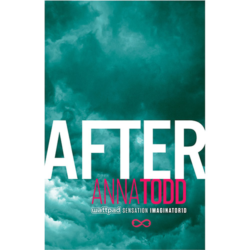

|  |
AfterDepois de bater a marca de um bilhão de acessos na plataforma de leitura Wattpadao transformar os integrantes da banda One Direction em personagens de uma história de amor sexy, a série After vira livro e promete ser o novo fenômeno editorial. No primeiro livro, Tessa, de 18 anos, sai de casa, onde mora com a mãe, para ir para a faculdade. Até então sua vida se resumia a estudar e ir ao cinema com o namorado doce que conheceu ainda criança. No primeiro dia na faculdade, onde ela passa a dividir o quarto com uma amiga que adora festas, Tessa conhece Hardin, um jovem rude, tatuado e com piercings que implica com seu jeito de garota certinha. Logo, no entanto, os dois se envolvem e Tessa, que era virgem, vê sua sexualidade aflorar. Hardin é inspirado em Harry Styles, um dos membros do One Direction. Os outros quatro músicos da banda = Zayn, Niall, Louis e Liam = também viraram personagens na trama. Tessa logo descobre que Hardin possui um passado cheio de fantasmas e os dois começam um relacionamento intenso e turbulento. Depois dele, ela nunca mais será a mesma. |
Valor: R$ 17,91 |